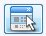
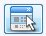

Diagnósticos por paciente
Si no selecciona ninguna opción para filtrado de datos, se mostraran todos los diagnósticos de los pacientes que asistieron a la consulta, sin considerar el pago de la misma.
Los datos requeridos para generar el listado son Ordenar por un campo que se mostrara en el listado, el tipo de ordenamiento del campo elegido y la cantidad de registros ha mostrar.
Para seleccionar un tipo de Filtro se debe presionar en el recuadro y aparecera seleccionado el tipo de filtro  . Al
presionar el botón  se abrira una ventana con opciones de búsqueda para seleccionar el paciente o diagnóstico según el filtro seleccionado.
. Al
presionar el botón  se abrira una ventana con opciones de búsqueda para seleccionar el paciente o diagnóstico según el filtro seleccionado.
En el siguiente ejemplo no se aplico ningún filtrado de datos, el mismo se ordeno por Paciente, se utilizo tipo de ordenamiento ascendente y se eligio listar todos los registros. Al presionar el botón "Ver" aparece el siguiente listado.